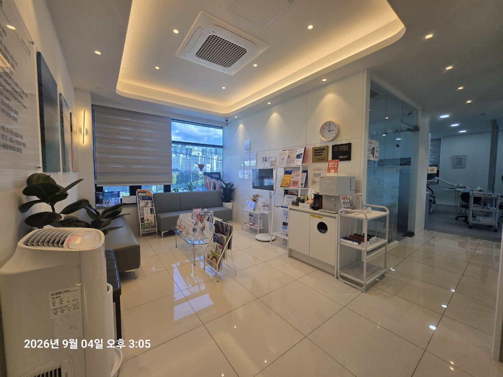
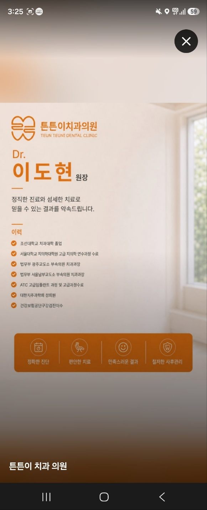
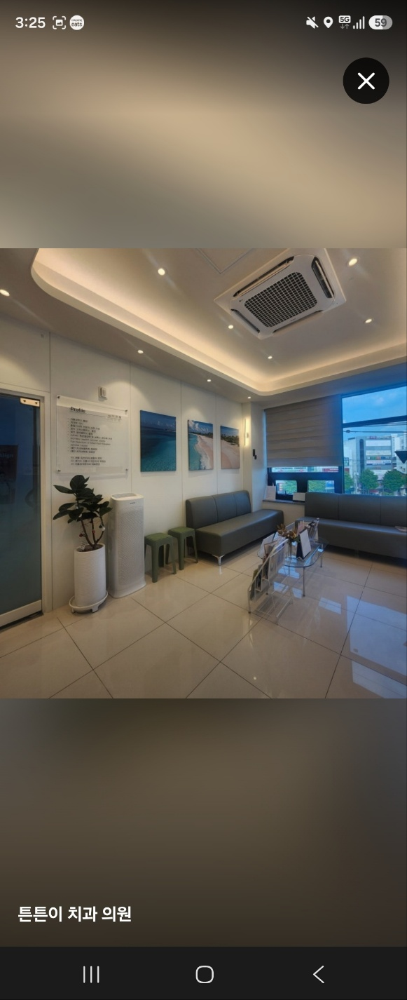
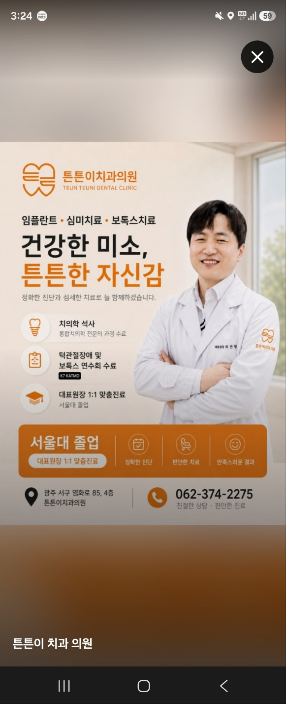
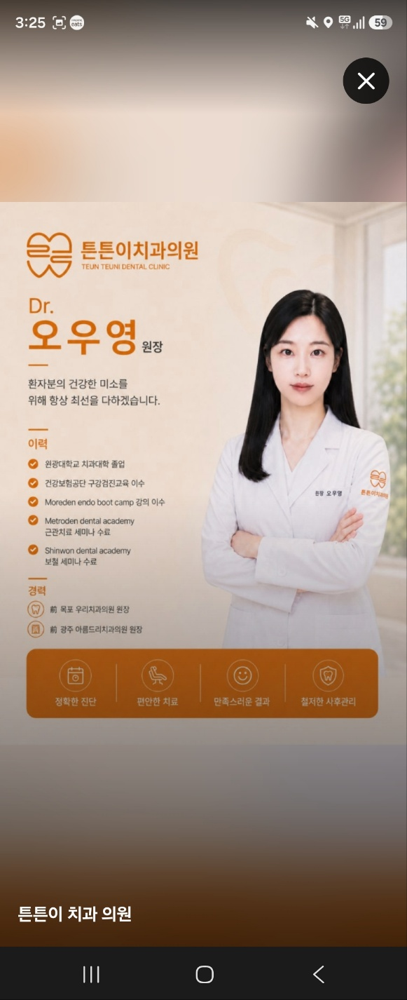
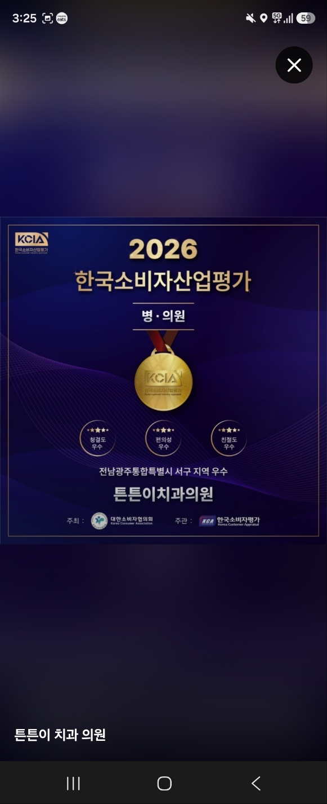

OUR PHILOSOPHY
필요한 치료를
차분하고 세심하게.
튼튼이치과는 환자분이 자신의 구강 상태와 치료 과정을 충분히 이해할 수 있도록 설명하는 것을 중요하게 생각합니다.
01
환자별 진단과 치료계획
환자별 진단과 치료계획
02
치료 전후 충분한 설명
치료 전후 충분한 설명
03
월·수 야간진료
월·수 야간진료
04
일요일 진료
일요일 진료
DENTAL CENTER
튼튼이치과 주요 진료
구강 상태와 치료 목적에 따라 진료계획을 세웁니다.
01
임플란트
진단을 바탕으로 식립 위치와 보철 계획을 함께 고려합니다.
02
교정진료
치열과 교합 상태를 평가해 개인별 교정 계획을 안내합니다.
03
턱관절치료
턱관절 통증과 개구 불편 등 증상을 확인하고 필요한 치료를 안내합니다.
04
심미보철
기능과 심미를 함께 고려하여 자연스러운 보철치료를 계획합니다.

MEDICAL TEAM
튼튼이치과 의료진
진단부터 치료계획, 사후관리까지 환자분의 이야기를 듣고 충분히 설명하며 진료하겠습니다.
의료진 소개
업로드해 주신 의료진 소개 자료를 바탕으로 다음 단계에서 원장별 프로필과 학력·경력을 별도 영역으로 정리할 수 있습니다.
OUR CLINIC
치과 둘러보기
튼튼이치과의 공간을 사진으로 확인해 보세요.




INFORMATION
진료 안내 · 오시는 길
진료시간
월요일09:00–21:00
화요일09:00–18:30
수요일14:00–21:00
목요일휴무
금요일09:00–18:30
토요일09:00–16:00
일요일10:00–14:00